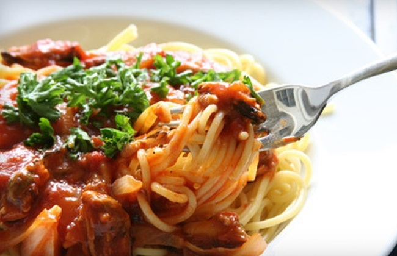

Get Lost in the Beauty of Ancient History
Rome was called the “Eternal City” by the ancient Romans because they believed that no matter what happened in the rest of the world, the city of Rome would always remain standing. Exploring the city centre by foot surrounded by glorious monuments and colossal remains takes you back in time to the “glory that was Rome”.Italy is rich with history and offers many sightseeing opportunities. Italy is one of the most visited countries in Europe and for good reason. The city offers a many monuments and memorials, the most notable being the colosseum in the center of the city.

Do Whatever Your Heart Desires
There is plenty to do in Rome. Take in the ancient history while enjoying classic Italian food on the same streets where Roman Legions once marched. Visit the Ambrosia Rooftop Restaurant and Bar to get an amazing view of the city while enjoying your dinner. Rome offers some of the best sightseeing in Europe, as the Mediterranean Sea is almost always in view.
